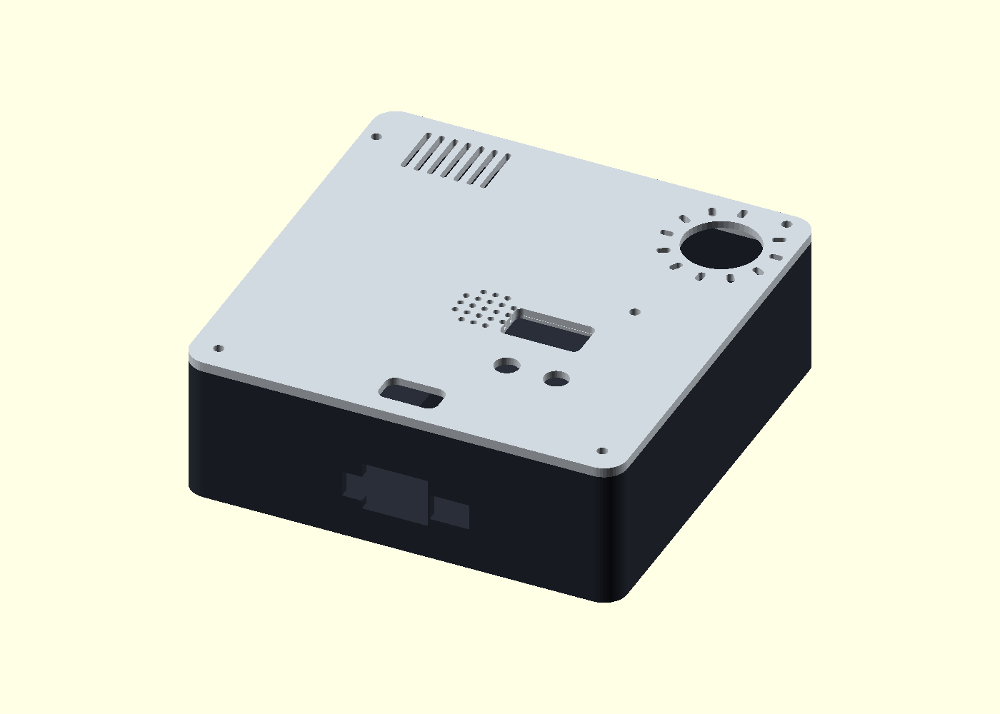
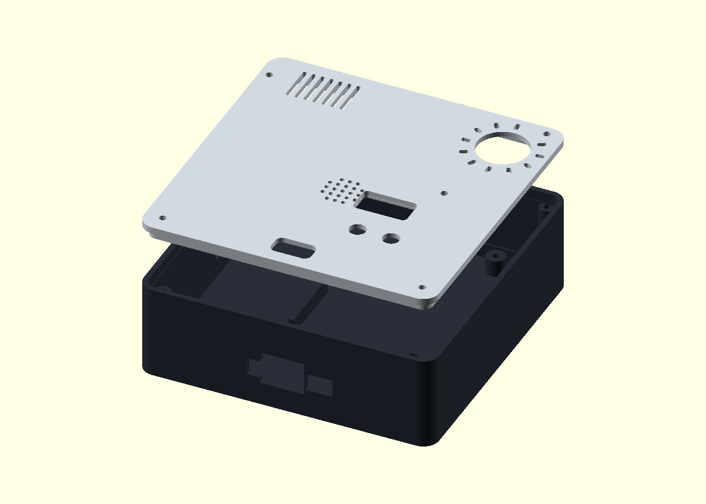

ENGINEERING PROJECT
Zhi'an Home: Edge-Based Power Monitoring and Load Identification
School of Transportation and Electrical Engineering
Dalian University of Science and Technology
Low-voltage prototype

Abstract
Zhi'an Home is a low-voltage demonstrator for interpreting load states and responding to controlled electrical anomalies. It connects sensing, feature extraction, decisions, local feedback, relay control and a phone interface.
The main design choice is a local decision path: deterministic anomaly rules run before ordinary load classification. ESP32 communication adds status viewing and detection commands while the STM32 handles the core processing and controls.
System architecture
An STM32F103C8T6 processes short voltage and current sequences using online statistics, adaptive Kalman filtering and Savitzky–Golay smoothing. Spectral, wavelet and transient features support rule-based and weighted-voting decisions for no-load, lamp and small-motor states.
Rapid current rises and voltage drops enter the anomaly path before ordinary classification. OLED, indicators, a buzzer and a relay make the result observable locally. Detection can start from the PC14 button or an ESP32-linked phone interface, which also receives status and measurements.
My contribution
I developed the embedded firmware, schematics and PCB, assembled the hardware, and carried out system integration and debugging. My work connected measurement processing with load-state decisions, local feedback and the communication interface.
I used AI tools to assist mobile-app development and OpenSCAD enclosure modeling, then integrated those outputs into the prototype and project demonstration.

Prototype validation
The submitted test sheet records successful demonstrations in five categories: controlled suspected-short recognition, lamp/motor classification, proximity triggering, local/app result consistency, and no-load indication. The presentation also documents the local alarm and relay-control path.
These are functional demonstration records. The presentation identifies at least ten repeat tests per load class and improved motor-classification stability as work still to complete.
The project received Second Prize in the 2026 CIMC “Siemens Cup” national preliminary, North China Division I, in the Intelligent Manufacturing Innovation and R&D, Free Exploration category.
Scope and limitations
The demonstrated hardware uses a low-voltage DC platform. It has not been validated for direct connection to 220 V AC circuits or for use as certified electrical protection.
Repeated classification and a larger, consistently collected load dataset remain necessary. Gas-channel readings are not calibrated concentrations, and the reflective proximity sensor does not establish room-scale human presence. Long-term reliability, isolation and mains-safety engineering remain separate validation tasks.